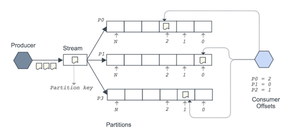

Event Types
The object containing the information describing an event is called an event type.
To publish events an event type must exist in Nakadi. The event type contains information such as its name, a category, the owning application, strategies for partitioning and enriching data, and a JSON Schema. Nakadi has an event type registry API that lists all the available event types.
Event Types and Categories
There are three main categories of event type defined by Nakadi -
Undefined Event: A free form category suitable for events that are entirely custom to the producer.
Data Change Event: An event that represents a change to a record or other item, or a new item. Change events are associated with a create, update, delete, or snapshot operation.
Business Event: An event that is part of, or drives a business process, such as a state transition in a customer order.
Each event category enables different capabilities for an event type, notably their schema and validation rules, which we'll describe next.
Event Type Schema and Effective Schema
The events for the 'business' and 'data' categories have their own pre-defined schema structures, based on JSON Schema, as well as a schema that is defined custom to the event type when it is created. The pre-defined structures describe common fields for an event and the custom schema for the event is defined when the event type is created.
The schema for an event type is submitted as a JSON Schema and will only declare the custom part of the event. This means the pre-defined schema for the 'business' and 'data' categories don't need to be declared (and should not be declared). The 'undefined' category has no-predefined schema.
When an event for one of these categories is posted to the server, it is expected to conform to the combination of the pre-defined schema and to the custom schema defined for the event type, and not just the custom part of the event. This combination is called the effective schema and is validated by Nakadi for the 'business' and 'data' types.
The 'undefined` category behaves slightly different to the other categories. Its effective schema is exactly the same as the one created with its event type definition (it has no extra structure), but it is not validated by Nakadi. Instead an 'undefined' event type's schema is simply made available in the event type registry for consumers to use if they wish.
The custom schema for an event type can be as simple as
{ "\additionalProperties\": true } to allow arbitrary JSON, but will usually
have a more specific definition :)
Creating an Event Type
An event type can be created by posting to the /event-types resource.
This example shows a business category event type called order_received:
curl -v -XPOST -H "Content-Type: application/json" http://localhost:8080/event-types -d '{
"name": "order_received",
"owning_application": "acme-order-service",
"category": "business",
"partition_strategy": "random",
"enrichment_strategies": ["metadata_enrichment"],
"schema": {
"type": "json_schema",
"schema": "{ \"properties\": { \"order_number\": { \"type\": \"string\" } } }"
}
}'
The event type has a simple JSON Schema submitted as an escaped JSON string describing the order number and thus only declare the custom part of the schema. The partition_strategy
says events will be randomly allocated to partitions, and the owner's name is
"acme-order-service". The enrichment_strategies array says to apply metadata_enrichment to submitted events (common metadata is a feature of some categories).
A successful request will result in a 201 Created response.
Once an event type is created, it is added to the event type registry and its details are visible from its URI in the registry. Events can then be posted to its stream and consumed by multiple clients.
The exact required fields depend on the event type's category, but name, owning_application and schema are always expected. The
"API Reference" contains more details on event types.
Partitions
An event type's stream is divided into one or more partitions and each event is placed into exactly one partition. Partitions preserve the order of events - once an event is added to a partition its position relative to other events in the partition is never changed. The details of the partitions and their offsets for an event type are available via its /partitions resource.
Partition Ordering
Each partition is a fully ordered log, and there is no global ordering across partitions. Clients can consume a stream's partitions independently and track their position across the stream.

Dividing a stream this way allows the overall system to be scaled and provide good throughput for producers and consumers. It's similar to how systems such as Apache Kafka and AWS Kinesis work.
Partition Strategies
The assignment of events to a partition is controllable by the producer. The
partition_strategy field determines how events are mapped to partitions. Nakadi offers the following strategies:
random: the partition is selected randomly and events will be evenly distributed across partitions. Random is the default option used by Nakadi.hash: the partition is selected by hashing the value of the fields defined in the event type'spartition_key_fields. In practice this means events that are about the same logical entity and which have the same values for the partition key will be sent to the same partition.user_defined: the partition is set by the producer when sending an event. This option is only available for the 'business' and data' categories.
Which option to use depends on your requirements. When order matters, hash is usually the right choice. For very high volume streams where order doesn't matter, random can be a good choice as it load balances data well. The user defined option is a power tool, unless you know you need it, use hash or random.